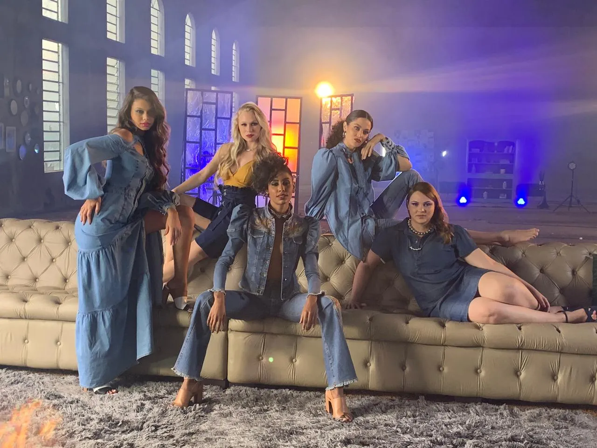
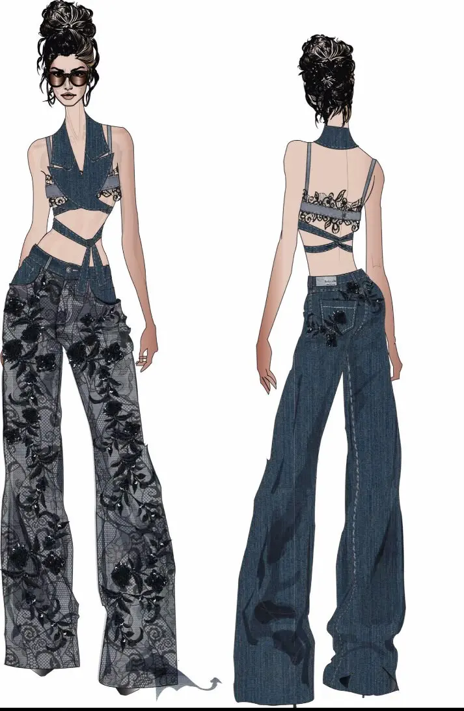
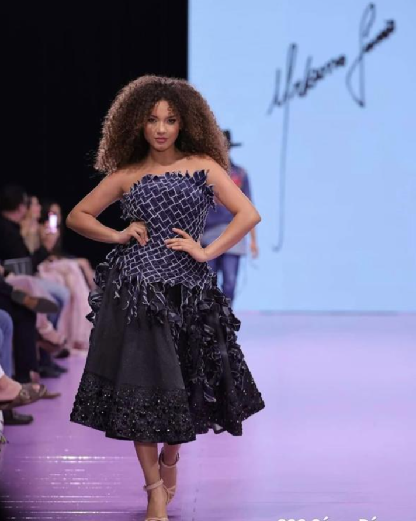

URBANO JUNIOR · GOIÂNIA
Alta Costura sob medida em Goiânia
Criação autoral de vestidos, conjuntos e peças sob medida, com Urbano Junior. Do desenho aos acabamentos, o projeto considera suas medidas, suas referências e a ocasião. Atendimento com hora marcada no Jardim América.
CONVERSAR SOBRE MINHA PEÇAACERVO DE ALTA COSTURA
Forma, presença
e detalhes.
Looks de passarela e peças do acervo de Urbano Junior. Diferentes maneiras de trabalhar proporção, textura e movimento.
O DESENHO GANHA MATÉRIA
A construção
de cada detalhe
Um recorte muda a silhueta. Um tecido interfere na estrutura e no movimento. Bordados, aplicações e acabamentos participam da composição da peça.
O desenvolvimento sob medida aproxima essas escolhas do corpo e da proposta de uso. Materiais e técnicas são discutidos conforme o desenho e o orçamento de cada projeto.
Conheça Urbano JuniorDO TRAÇO À PEÇA
Criação que começa
no desenho
O croqui organiza a ideia: linhas, volumes, recortes e proporções. A modelagem e as provas trabalham essas decisões em três dimensões, considerando o caimento e o movimento.
Urbano Junior acompanha o desenvolvimento do projeto, do conceito aos ajustes finais.
APRESENTAR MINHAS REFERÊNCIAS

SEU PROJETO NO ATELIÊ
Como a peça é desenvolvida
As etapas e o cronograma são combinados antes do início. Cada escolha considera o projeto, a disponibilidade de materiais e a data de uso.
- 01
Escuta e referências
Conte como pretende usar a peça, compartilhe suas referências e converse sobre estilo, silhueta e preferências.
- 02
Desenho e escolhas
Modelo, tecidos, cores e detalhes compõem a proposta. Escopo, orçamento e prazos são alinhados com você.
- 03
Modelagem e provas
O desenvolvimento parte das suas medidas. As provas permitem avaliar estrutura, caimento, movimento e conforto.
- 04
Acabamento e entrega
Ajustes e detalhes finais concluem a peça conforme o desenho e as condições definidas para o projeto.
ANTES DE COMEÇAR
Perguntas sobre
alta costura sob medida
Informações para planejar sua peça e a primeira conversa com o estilista.
Fale com Urbano JuniorComo funciona um projeto de alta costura sob medida?
O projeto começa com uma conversa sobre a peça, a ocasião e suas referências. Modelo, materiais e orçamento são definidos antes da execução. Em seguida, a modelagem, as provas e os acabamentos desenvolvem a proposta para suas medidas, com acompanhamento de Urbano Junior.
Que tipos de peças posso desenvolver com Urbano Junior?
O trabalho contempla criação autoral de vestidos, conjuntos e peças sob medida. O acervo desta página apresenta diferentes silhuetas, volumes, recortes e aplicações. Para saber se uma proposta pode ser desenvolvida, envie suas referências e converse com o estilista sobre materiais, uso e viabilidade.
Qual a diferença entre uma peça pronta e uma criação sob medida?
Na peça pronta, o modelo e a grade de tamanhos já estão definidos. Na criação sob medida, o desenho e a modelagem partem do projeto e das medidas da pessoa. As provas permitem avaliar proporções, caimento e conforto antes dos acabamentos finais.
Quanto custa uma criação de alta costura?
O orçamento depende do desenho, dos tecidos, da estrutura, das aplicações e do trabalho de acabamento. Envie suas referências e a data em que pretende usar a peça pelo WhatsApp +55 (62) 98164-7663. Valor, materiais incluídos e condições são definidos na proposta individual.
Com quanto tempo de antecedência devo agendar?
Entre em contato quando tiver as primeiras referências e uma previsão de uso. O prazo depende da agenda do studio, dos materiais e da complexidade da peça. Confirme a disponibilidade e combine o cronograma de criação, provas e entrega antes de iniciar.
Posso levar referências de looks, tecidos e cores?
Sim. Imagens de silhuetas, tecidos, cores e detalhes ajudam a explicar suas preferências. Elas orientam a conversa sobre uma criação autoral adequada ao seu corpo e à ocasião. A escolha dos materiais e a possibilidade de cada acabamento são avaliadas no projeto.
Como funcionam as provas e os ajustes?
As provas servem para avaliar caimento, movimento, comprimento e conforto. A quantidade de encontros varia conforme a modelagem e os ajustes necessários. Combine as datas com o studio e confirme quais sapatos e acessórios levar para avaliar a peça.
Onde fica o ateliê de alta costura em Goiânia?
O studio Urbano Junior fica na Rua C-146, 220, Jardim América, Goiânia – GO, CEP 74255-170. O atendimento é com hora marcada. Agende pelo WhatsApp +55 (62) 98164-7663 e envie suas referências para iniciar a conversa.
Localização e contato
Atendimento com hora marcada no studio Urbano Junior, em Goiânia.
Studio Urbano Junior
Rua C-146, 220 · Jardim AméricaGoiânia – GO · 74255-170